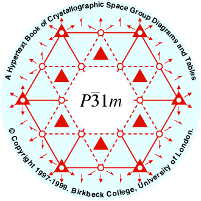
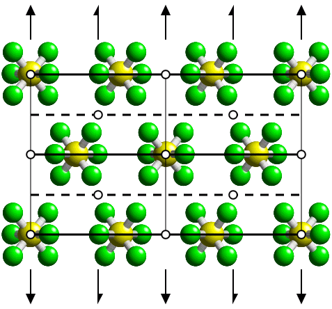

Return link to the main menu
The CD-ROM cover picture (below) shows the low-temperature crystal structure of sulphur hexafluoride obtained from powder neutron diffraction data with the diagram of the space group C2/m superimposed (as seen down the c-axis). One third of the molecules have point symmetry 2/m while the remaining two-thirds have only point symmetry m.

Reference:
J. K. Cockcroft & A. N. Fitch.
The solid phases of sulphur hexafluoride by powder neutron diffraction.
Zeitschrift für Kristallographie 1988, 184, 123-145.